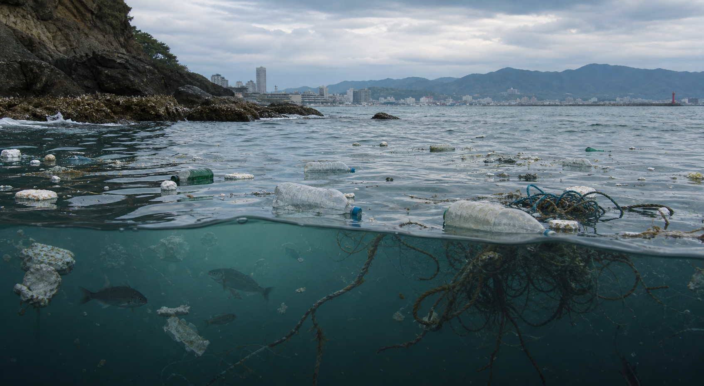

参与变化
亲手参与，观察变化
每次清理动作都会改变水质和生机，体验“手动修复”的过程。
模拟体验
当前 · 部分 · 完全
切换清理程度，观察水质、垃圾量和海洋生物状态如何变化。
清理前
清理后
水质恢复: 0%
模拟影响

污染的海洋与漂浮垃圾
垃圾量: 80%
海洋生物: 受损
海水: 浑浊
日本实景档案
从发现污染，到清理，再到恢复后的海岸
以下为日本环境省与冲绳县公开的真实现场照片；三张照片用于说明不同清理阶段，并非同一地点的连续对照。


图片著作权归原发布机构所有，点击每张照片下方的出处可查看原始页面。